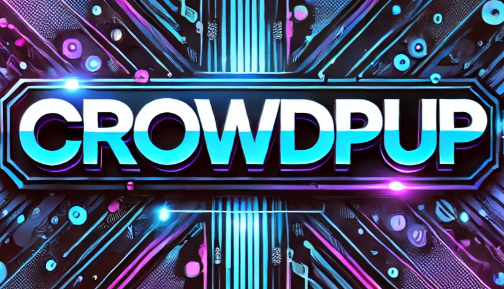
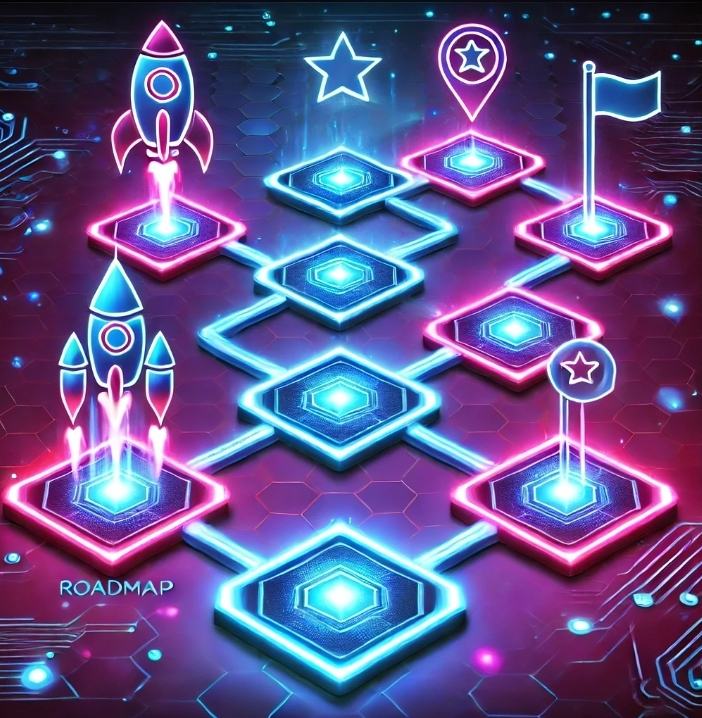

What is CrowdPup?

CrowdPup is a unique meme token designed to revolutionize crowdfunding by combining the playful appeal of meme
culture with the functional power of blockchain technology. With $PUP tokens, anyone can create, support, or
invest in crowdfunding campaigns in a decentralized, efficient, and transparent way.
Roadmap

Follow our four-phase journey to bring CrowdPup to life: Token Launch, Platform Development, Decentralized
Platform Launch, and Global Expansion.
Tokenomics
Our $PUP token has a fixed supply of 10 billion tokens, distributed across development, marketing, partnerships,
and community incentives to power decentralized crowdfunding globally.